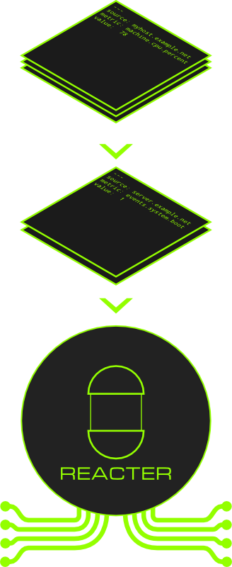

Reacter is a utility written in Ruby designed to consume data from one or more data sources, apply a series of processing rules to that data, then forward the output to one or more destinations.
Reacter can be customized using plugins, called agents, designed to work with message data. The standard agents provide the ability to manipulate the message's fields with regular expressions, conditionally execute scripts based on thresholds, and forward the output message onto popular systems such as Nagios and Graphite. Creating new agents is extremely simple, so integrating new systems into Reacter is straightforward and easy.
Reacter's configuration is very robust and can be comprised of multiple files and directories. This provides the flexibility for administrators to allow users to create their own configurations, while also maintaining appropriate privilege separation and security. Specific files or entire directory trees can be included in the main configuration, allowing for custom configuration scenarios, including simple self-service monitoring subscription. Reacter also provides sane defaults for most options so that configuration overhead and complexity can be kept to a minimum, favoring convention over detailed configuration.
Let's say you have a monitoring infrastructure made up of a combination of several open source projects (e.g. Nagios, Graphite, collectd, StatsD), and one proprietary platform that you use to monitor your extensive virtualization deployment. Each of these systems serves a different purpose, but together they hold the data necessary for you to discover, diagnose, and solve problems that develop in your environment.
The biggest problem you are facing at the moment is that integrating these systems is tricky and time consuming. Among these challenges are:
This hectic scenario may sound like it is perfectly workable, solvable, and preventable — and, indeed, it is. But you are one of a very small team of people tasked with keeping everything running, and you live and work by time. Each of these problems can be attacked from different angles specific to the application, but that means possibly disruptive configuration changes, extensive testing, and ongoing maintenance. For the hard-coded black boxes in your infrastructure, solving such problems almost certainly involves some kind of proxy script, screenscraper, or hacky cron job.
Reacter provides a simple solution to these problems by creating a monitoring pipeline. Instead of your monitoring systems talking directly to each other in domain-specific, clunky, and inconsistent ways; they all talk to Reacter in the same way. The up front work of getting all data sources to dump metrics in a common format allows future changes to the monitoring infrastructure to be managed from one place. It lets you form a system where individual components don't depend on each other, and can be changed out for others without disrupting the entire ecosystem.
Here are some possible solutions to the above scenarios:
